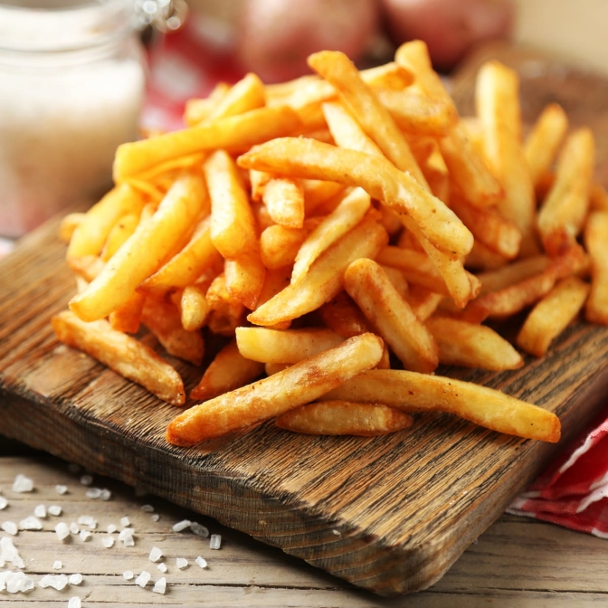

Home
Crispy fries

Description
Triple cooked fries are a type of French fry that is made by cooking
the potatoes three times using different methods
to achieve a crispy exterior and a fluffy interior.
The first cooking involves simmering the sliced potatoes
in water until they are tender but not falling apart.
The second cooking involves frying the potatoes in oil at a low temperature
to remove any excess moisture and create a slightly crispy exterior.
The third and final cooking involves frying the potatoes again at a higher temperature
to create a crispy golden-brown exterior.
Ingredients
- 2 pounds russet potatoes
- 1 cup extra virgin olive oil
- Oregano
Steps
- Wash and peel the potatoes. Cut them into thin, even slices, about 1/4 inch thick.
- Rinse the potato slices in cold water to remove excess starch.
- In a large pot, bring salted water to a boil. Add the potato slices and cook them for about 8-10 minutes or until they are just tender.
- Heat the olive oil in a deep pot or fryer to 325°F (160°C).
- Fry the potatoes in small batches for about 5-6 minutes or until they are slightly crispy but not browned.
- Remove the fries from the oil and let them cool on a wire rack or paper towels.
- Increase the heat of the oil to 375°F (190°C).
- Fry the fries again in small batches for about 2-3 minutes or until they are golden brown and crispy.
- Remove the fries from the oil and let them cool on a wire rack or paper towels.
- Season the fries with salt and oregano to taste.